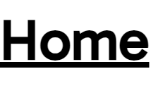
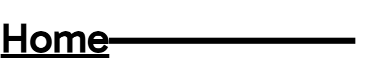
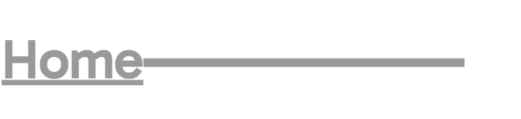
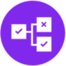

Triggers
- Hovering on and hovering off.
- Clicking

Rules
Hover on: Cursor turns into a pointer, line extends outward by 25 viewport width.
Hover off: Pointer turns back into normal cursor, line retracts inward, disappearing.
Click: Text and line turn grey and become 5% smaller.
Feedback
Hover on: Cursor turns into a pointer, line extends outward by 25 viewport width.
Hover off: Pointer turns back into normal cursor, line retracts inward, disappearing.
Click: Text and line turn grey and become 5% smaller.
Loops and Modes
This microinteraction does not include any loops that automatically repeat, nor any alternative modes.